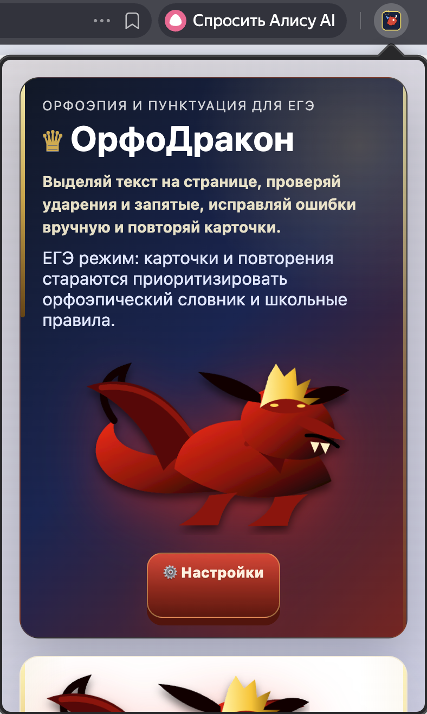
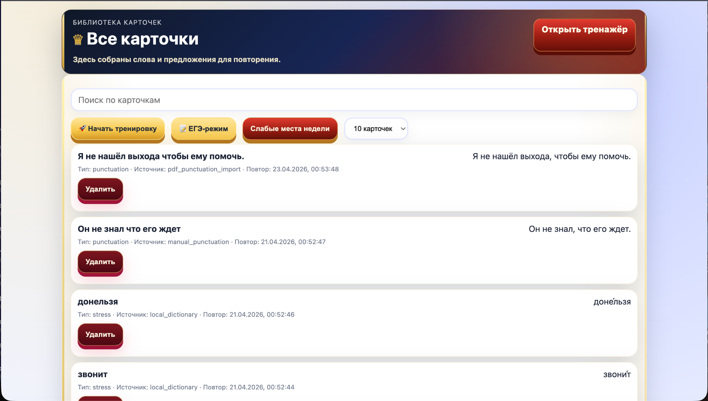
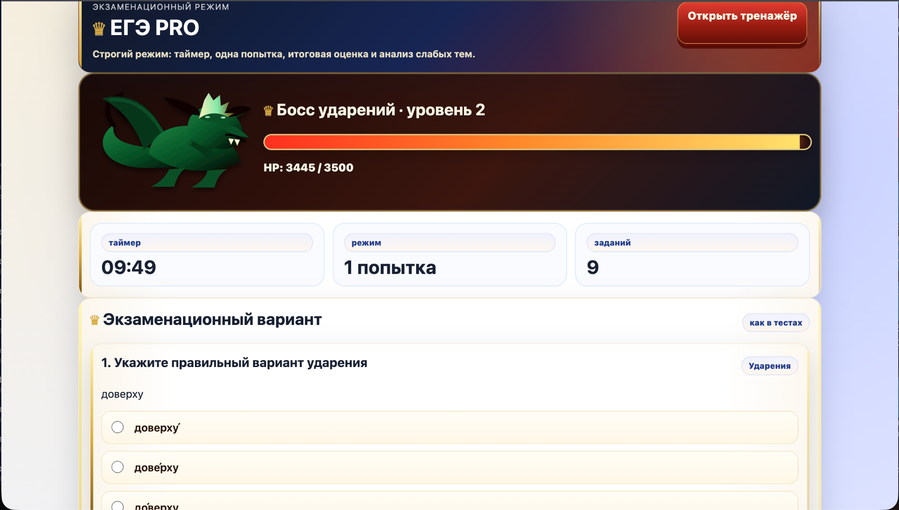

Карточка
ЕГЭ
Поставь ударение:
договордогово́р
Расширение для Chrome • ЕГЭ • Карточки
ОрфоДракон помогает проверять ударения, тренировать пунктуацию, повторять сложные случаи в карточках и проходить тесты в режиме ЕГЭ.
Поставь ударение:
договорПилот в школе
Мы проверяем, насколько удобно пользоваться расширением в реальных школьных условиях: на уроках, при подготовке к ЕГЭ и в самостоятельной подготовке дома.
Цель пилота — понять, помогает ли расширение быстрее разбирать ударения, запятые и закреплять сложные случаи через карточки и тренировку.
Оставить отзывОбратная связь
После тестирования обязательно оставьте короткий отзыв: это поможет понять, насколько удобно пользоваться расширением, какие функции полезнее всего и что стоит улучшить в первую очередь.
KPI пилота
Для школьного тестирования мы ставим реалистичные цели, чтобы оценить интерес к продукту, удобство установки и полезность основных функций.
Планируем получить не меньше 30 переходов на лендинг во время школьного пилота.
Проверим, насколько людям интересен продукт и готовы ли они попробовать расширение.
Нужно, чтобы хотя бы 5 пользователей не просто открыли сайт, а реально протестировали расширение.
Хотим собрать качественную обратную связь от учеников и учителей после тестирования.
Цель — получить среднюю оценку полезности расширения не ниже 4 из 5.
Хотим понять, какие функции важнее всего: ударения, запятые, карточки или ЕГЭ-режим.
Возможности
Не просто показывает ответ, а помогает закрепить правило через карточки, тренировки и повторение.
Проверяй ударение в словах.
Тренируй пунктуацию по правилам и смотри краткое объяснение.
Сохраняй сложные случаи и возвращайся к ним позже.
Повторяй карточки в формате коротких учебных сессий.
Решай тестовые задания в формате экзаменационного тренажёра.
Умные уведомления приоритизируют сложные слова и предложения.
Интерфейс
Ниже — реальные экраны расширения: popup, библиотека карточек и ЕГЭ-режим.

Быстрая проверка ударений, запятых и доступ к карточкам.

Сохраняй сложные случаи и повторяй их позже в удобном формате.

Тестовый режим для подготовки к экзамену в формате задания.
Как это работает
Кому подойдёт
Установка
Сейчас основной путь — через GitHub Release. Позже можно добавить публикацию в Chrome Web Store.
chrome://extensions
browser://extensionsextension в распакованном архиве.После публикации в Chrome Web Store установка станет проще: достаточно будет нажать одну кнопку в магазине и добавить расширение в браузер.
Здесь подробнее описаны способ установки и принцип пользования расширением.
Что внутри
Открыл popup — получил ответ за пару секунд.
Повторение и ЕГЭ-режим помогают закреплять сложные случаи системно.
Попробовать
Скачай расширение, загрузи его в браузер и преврати типичные ошибки в карточки для повторения.
Обратная связь
Нам важно понять, насколько удобно пользоваться расширением, какие функции полезнее всего и что стоит улучшить.
FAQ
Да, базовая локальная версия может работать без внешнего API.
Да. Код проекта открыт на GitHub, а карточки и настройки в локальной версии хранятся в браузере пользователя.
Потому что текущая публичная версия распространяется через GitHub Release. После публикации в Chrome Web Store путь установки станет проще.
Да. Особенно полезны карточки, тренировки, уведомления и отдельный ЕГЭ-режим.
Да, для этого на сайте есть отдельная кнопка GitHub.
Мы хотим проверить, насколько удобно расширение для учеников и учителей и какие функции наиболее полезны в реальной практике.
На лендинге собирается только обезличенная статистика посещений и кликов по кнопкам через Яндекс Метрику.
Да. В расширении есть карточки, режим тренировки и отдельный ЕГЭ-режим в формате теста.